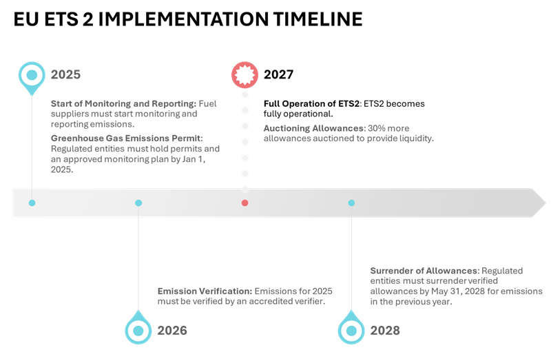
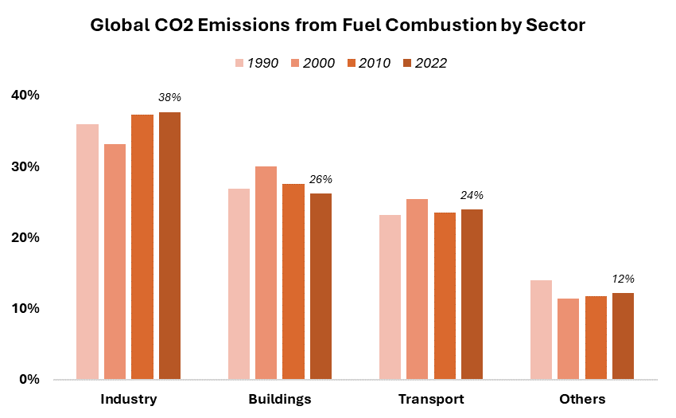
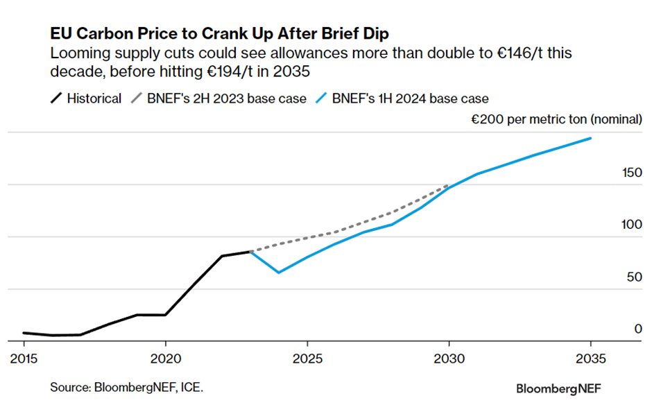
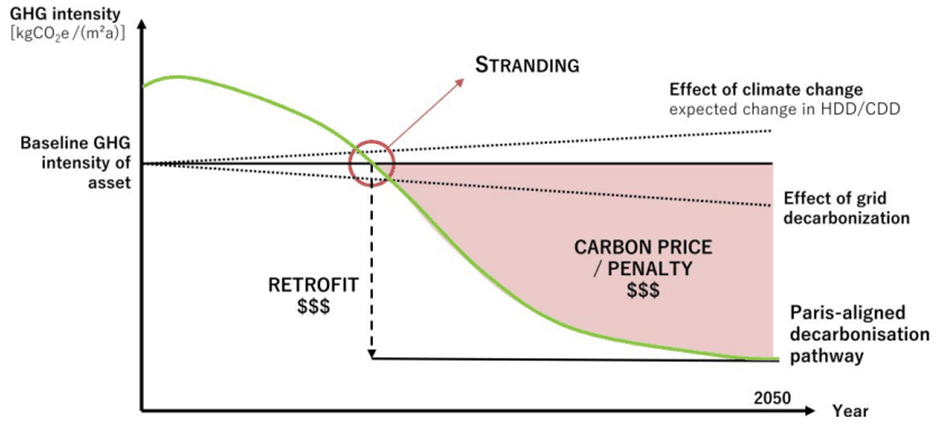

Policy Brief: The Coming Wave of EU ETS 2 and What Investors Need to Know
The EU Emissions Trading System is expanding. Commercial real estate is next.
The European Union’s Emissions Trading System (EU ETS), the world’s largest carbon market, is entering a new and consequential phase. Since 2005, the EU ETS has applied to power generators, aviation, and heavy industry. With EU ETS 2, buildings will be brought into scope. For commercial real estate investors, this marks a regulatory shift with serious financial implications.
By 2027, the building sector - 36% of total EU emissions and 40% of EU energy consumption - will fall under a legally binding cap-and-trade system. Owners of inefficient buildings will face escalating costs, tightening performance thresholds, and increasing exposure to stranding risk. Compliance is no longer optional. It is the law.

Source: European Commission
What is EU ETS 2?
EU ETS 2 expands the European Union’s carbon pricing regime to include emissions from buildings and road transport, two sectors previously excluded from the original framework.
While ETS 1 targeted the highest-intensity emitters, ETS 2 focuses on sectors with broad, distributed emissions footprints. Buildings alone account for 40% of EU energy use. The objective is clear: accelerate decarbonization by embedding carbon costs into the operational economics of property.

How it applies to commercial real estate
ETS 2 does not regulate property owners directly. Instead, it applies to fossil fuel suppliers (gas, oil, and heating fuel distributors) who are expected to pass carbon costs through to end users. Landlords and operators of buildings that rely on fossil-based heating and cooling will see higher energy bills.
The incentive is clear: transition toward electrification and renewable energy. This approach is aligned with other EU directives, such as the Energy Performance of Buildings Directive (EPBD) and minimum energy performance standards (MEPS).
Initial implementation will focus on large commercial and industrial buildings, but residential and smaller properties may be included in later phases.
What it will cost

Carbon prices under ETS 2 are expected to rise significantly, potentially reaching €150-€200 per tonne of CO₂ by 2030. This will create direct financial pressure on owners of inefficient buildings.
At the same time, regulatory performance thresholds are tightening. EU-level guidance requires all commercial buildings to achieve at least an “E” energy rating by 2027, improving to a “D” by 2030. National regulators may set even stricter targets.
Compliance and cost: the risk of delay
For CRE owners, risks include:
- Higher operational expenses driven by carbon pricing
- Capital expenditure pressure to meet new energy standards
- Liquidity risk due to devaluation or tenant flight from non-compliant buildings
- Reduced appeal to lenders and institutional buyers
To mitigate these costs, the EU has introduced modernization and innovation funds to support retrofits and compliance upgrades. However, funding is limited and application demand is expected to rise.
Retrofitting is no longer optional
To remain compliant and competitive under ETS 2, energy-efficient retrofits must move from priority to action. Owners should:
- Conduct energy audits to identify inefficiencies
- Upgrade building systems to reduce reliance on fossil fuels
- Implement electrification and improve insulation and heat retention
Digital planning tools like the Ledger Carbon Model can support this process. By offering scenario-based compliance roadmaps, these platforms help align capital planning with regulatory requirements, asset strategy, and operational constraints.
Offsetting will not count toward compliance
ETS 2 does not allow property owners to use external carbon credits to meet emissions targets. Building-level emissions must be addressed through reduced consumption and low-carbon energy sourcing.
That said, voluntary carbon offsets can still support broader corporate ESG strategies. In 2024, firms such as Google, Microsoft, and Salesforce committed to acquiring 20 million tonnes of CO₂ removal credits by 2030 - underscoring the growing interest in voluntary removal alongside regulatory action.
Green premiums, brown discounts, and capital markets
As ETS 2 takes hold, property markets will continue to bifurcate:
- Energy-efficient buildings will command a green premium in valuation, leasing, and liquidity
- Inefficient, fossil-fuel-dependent assets will face a brown discount and potential stranding risk
To stay ahead, investors should incorporate tools like the Carbon Risk Real Estate Monitor (CRREM).
The CRREM Framework
To support risk management for commercial real estate owners and investors, CRREM provides a comprehensive framework for assessing carbon-related financial risks and ensuring that property portfolios are aligned with EU climate goals.

Source: “Report on Completion of Pilot Testing Phase”, CRREM , 2020
By using predictive models and data-driven insights, investors can evaluate their assets' exposure to evolving regulations, plan for necessary energy performance upgrades, and optimize portfolios to maintain both sustainability and value over time.
The legal line is clear
ETS 2 formalizes carbon compliance as a legal requirement for buildings across the European Union. For real estate owners and institutional investors, this marks a fundamental shift in the regulatory landscape.
Those who act now can preserve value, reduce risk, and ensure resilience. Those who wait may face higher costs, limited exit options, and regulatory penalties. The question is no longer whether to act, but how soon, and how strategically.